1.2 Planungsabläufe
Planungsabläufe für die Gebäudeautomation
- Im folgenden wird ein Planungsablauf für die Gebäudeautomation (vereinfacht stilisiert) vorgestellt
- Hierbei wird auf das Beispiel einer Raumautomation eingegangen

| Leistungsphase | Bezeichnung | Gebäude (§ 34) | Innenräume (§ 34) | Technische Ausrüstung (§ 55) |
|---|---|---|---|---|
| 1 | Grundlagenermittlung | 2 % | 2 % | 2 % |
| 2 | Vorplanung | 7 % | 7 % | 9 % |
| 3 | Entwurfsplanung | 15 % | 15 % | 17 % |
| 4 | Genehmigungsplanung | 3 % | 2 % | 2 % |
| 5 | Ausführungsplanung | 25 % | 30 % | 22 % |
| 6 | Vorbereitung der Vergabe | 10 % | 7 % | 7 % |
| 7 | Mitwirkung bei der Vergabe | 4 % | 3 % | 5 % |
| 8 | Objektüberwachung – Bauüberwachung und Dokumentation | 32 % | 32 % | 35 % |
| 9 | Objektbetreuung | 2 % | 2 % | 1 % |
| Summe | 100 % | 100 % | 100 % |
Grundlagenermittlung und Bedarfsplanung
- Zunächst wird z.B. während der Ausschreibungsphase ein Lastenheft erstellt, welches beschreibt was erreicht werden soll
- Häufig enthält dieses eine textuelle Beschreibung des gewünschten Endzustandes
- meist formuliert durch die Kund:in / Bauherr:in ggf. unterstützt durch einen Planungsbüro
- Je nach Projekt kann hier auch auf bestehende Normen verwiesen werden bzw. diese müssen berücksichtigt werden
- z.B. Energieeffizienzklasse A nach EN15232
- d.h. Heizsystem mit Einzelraumregelung mit Kommunikation und Bedarfsanforderung
🤓 Österreich
- Leistungsgruppen der standardisierten Bauausschreibung
-
Komponenten-basiert. D.h. es werden Komponenten(typen) beschrieben, die in der Ausschreibung verwendet werden sollen und weniger auf die Erfüllung von Funktionen eingegangen
-
Leistungsgruppen
- LG 84 - GA-System Raumautomation
- LG 85 GA-System Anlagenautomation (AA)
- LG 86 GA-Management (GA-M)
🤓 Schweiz
- Stärkerer Fokus auf die Funktionen (z.B. durch Funktionstests)
- KBOB Empfehlung Gebäudetechnik dient als Definition der Anforderung an die gebäude-technischen Installationen und Anlagen
Vor- bis Genehmigungsplanung
- Fachplaner nehmen eine formale Beschreibung der Funktionen vor
- Die konzipieren wie die Funktionen umgesetzt werden sollen (Pflichtenheft)
- Typisch für diese Phase ist die Erstellung von Fließbildern und Schemata
- z.B. Stromlaufpläne, Pneumatikpläne, Hydraulikpläne, etc.
- Raumautomations-Schema und Raumautomations-Funktionschema (VDI 3813)
- Analgenautomations-Schema und Anlagenautomations-Funktionschema (VDI 3814)
Komponenten-Sicht durch Preplanning
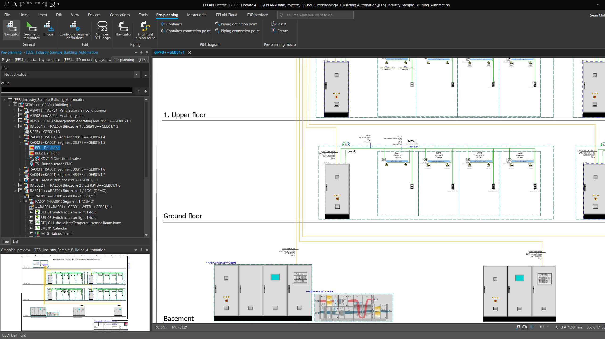
Funktions-Sicht durch Raumautomations-Schema (VDI 3813)
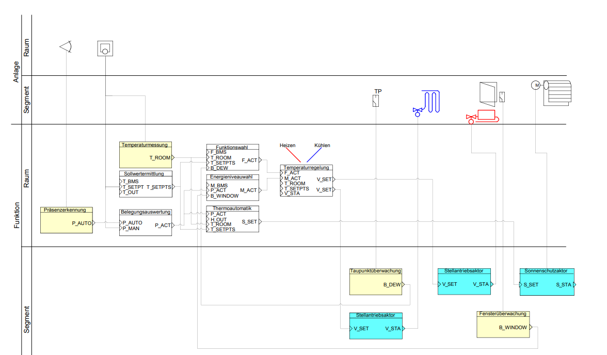
- Zuordnung von Sensoren, Aktoren und Funktionen zueinander
- und zu Raum vs. Segment (keine genaue Räumliche Positionierung)
- Blockbausteine für Funktionen: Nutzen Attribute der Sensoren, um Attribute der Aktoren zu verändern
Funktionen
- Eingaben: Werte, die in die Funktion eingehen und sich abhängig vom Systemzustand ändern können
- Parameter: unveränderliche Werte, die einmalig konfiguriert werden (z.B. in Abhängigkeit der Raumgröße)
- Ausgaben: Werte, welche von der Funktion abhängig von Parametern und Eingaben zurückgegeben werden
- Viele Funktionen stehen für viele Systeme standardisiert zur Verfügung (z.B. Loxone, Beckhoff, etc.)
- oder können selbst implementiert werden
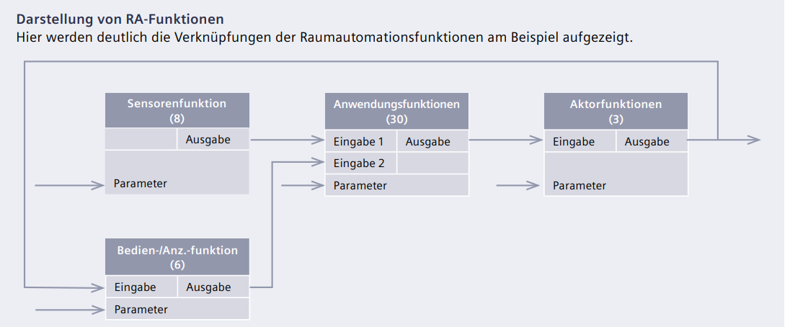
Sensorfunktionen
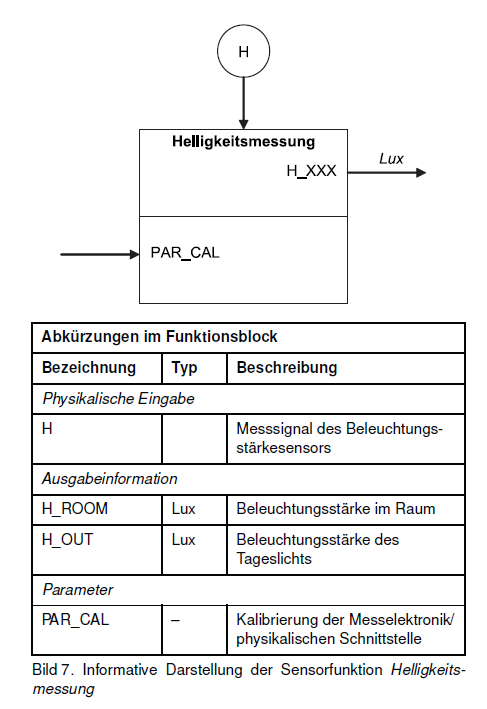
Ziel: Erfassen von Zuständen
- Präsenzerkennung,
- Fensterüberwachung,
- Taupunktüberwachung,
- Lufttemperaturmessung,
- Helligkeitsmessung,
- Luftqualitätsmessung,
- Windgeschwindigkeit,
- Niederschlag
Sensorfuktionen != Sensoren / Datenpunkte
- "künstliche" Trennung
- erhöht Flexibilität
- Ein Datenpunkt / Sensor
- Lufttemperaturmessung
- Luftqualitätsmessung
- ggf. Taupunktüberwachung
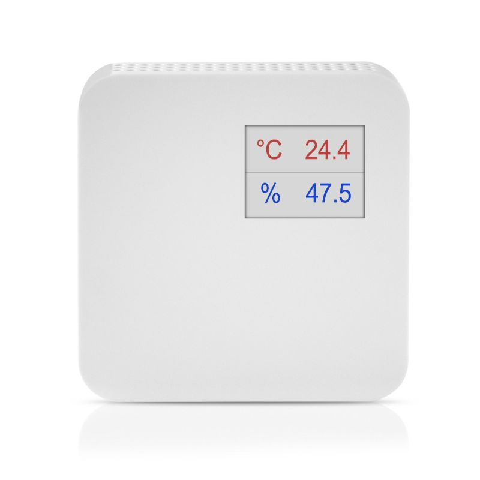
Beispiel Verschattungkorrektur
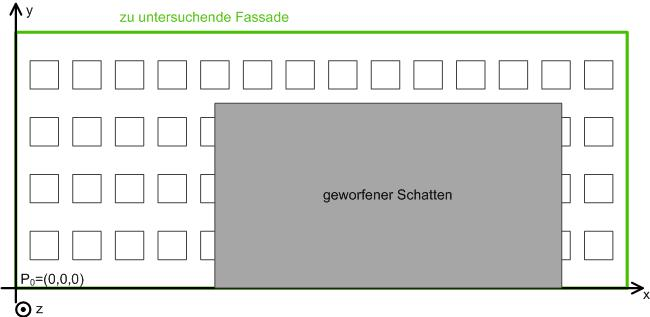
Aktorfunktionen
Ziel: Steuerung von Komponenten
- binärer Schaltaktor
- Lichtaktor,
- Sonnenschutzaktor,
- Stellantriebsaktor (z.B: Heizkörper)

Bedien-, Anzeige und Managementfunktionen
- Bedien- und Anzeigefunktionen (lokal)
- Stellantriebsaktor, Sonnenschutzstellen, Antriebstellen, Temperatursollwertstellen, Raumnutzungsart wählen, Präsenzmelden
- Managementfunktionen
- Aufzeichnung, Archivierung und statistische Analyse
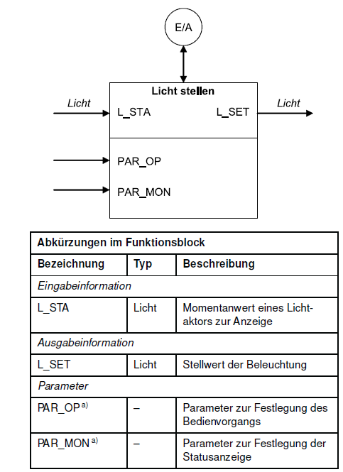
Anwendungsfunktionen
sind Programmabläufe die meist mehrere Aktoren und Sensoren miteinbeziehen
- Raumklima
- Energieniveauwahl, Energieniveauwahl mit Startoptimierung,Sollwertermittlung, Funktionswahl, Temperaturregelung, Raum‐Zulufttemperatur‐Kaskade, Ventilatorsteuerung, Sequenzsteuerung, Stellwertbegrenzung, Luftqualitätsregelung, Nachtkühlung, Volumenstromregelung
Anwendungsfunktionen
- Beleuchtung
-
Lichtschaltung, Treppenlichtschaltung, Automatiklicht, Tageslichtschaltung, Kostantlichtregelung, Dämmerungsschaltung
-
Sonnenschutz
-
Prioritätssteuerung, Dämmerungsautomatik, Sonnenautomatik, Lamellennachführung, Verschattungskorrektur, Thermoautomatik, Witterungsschutz
-
Übergreifend
- Belegungsauswertung, Steuerung über Raumnutzung, Zeitprogramm, Trennwandsteuerung, Thermoautomatik
Beispiel Treppenlichtschaltung
Über die Funktion Treppenlichtschaltung können Beleuchtungseinrichtungen temporär eingeschaltet werden. Nach Ablauf der Treppenlichthaltezeit kann eine Abschaltvorwarnzeit aktiv werden, die den Nutzer z. B. durch kurzzeitige Unterbrechung(„Flackern“) über die bevorstehende Abschaltung informiert. Ein erneuter Empfang einer Eingabeinformation zum Einschalten startet die Verzögerungszeit neu. Die Funktion benötigt als Eingabeinformation das Ergebnis der Bedienfunktion Licht stellen und liefert ihrerseits die Ausgabeinformation für eine oder mehrere Aktorfunktionen Lichtaktor.
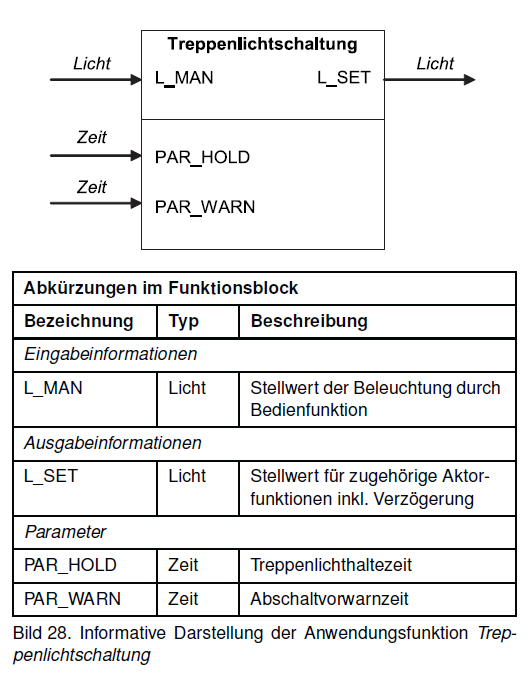
Zusammenhang zwischen verschiedenen Funktionen
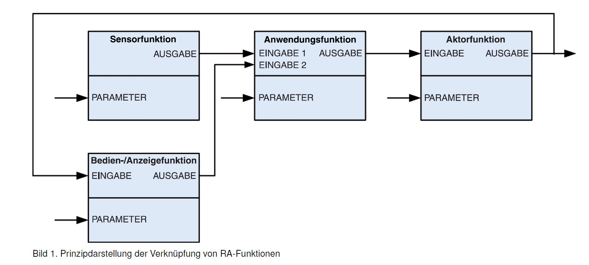
Schritt Raumautomations-Schema
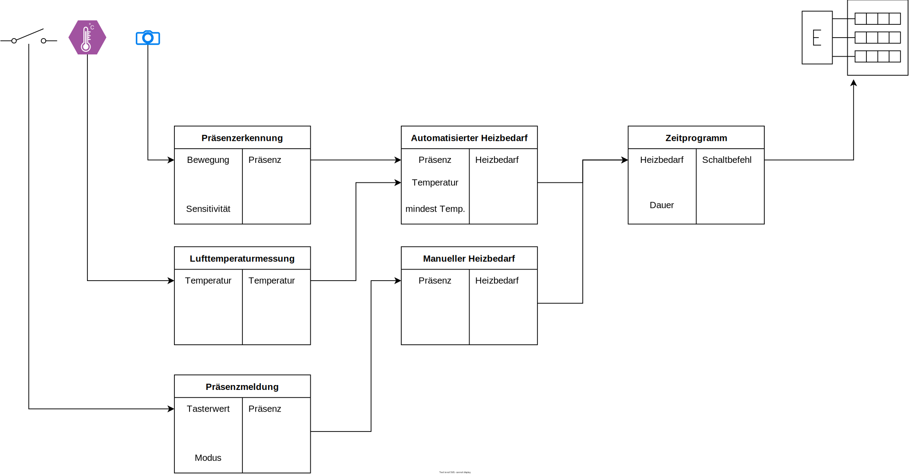
Ableitungen aus Vorplanung und Raumautomations-Schema
- Raumautomations-Schema zielt insbesondere auf die Implementierung, der gezielten Funktionalität (Funktionsbausteine werden auch in der Programmierung eingesetzt)
- Grafisches Werkzeug: Intuitive Prüfung auf Vollständigkeit möglich
- Entscheidung für Raum und Segment
- z.b. ein vs. mehrere Bewegungsmelder pro Segment
- Für die Mengenplanung und Installationsplanung ist eine andere Darstellung hilfreicher
✍️ Aufgabe 1_2_1: Raumautomationsschema für ein Treppenhaus
- Befüllen Sie das vorliegende Raumautomations-Schema mit den entsprechenden Funktionen für die Beleuchtung eines Treppenhauses
- Alle Leuchten werden über einen Aktor für das gemachte Treppenhaus zusammengefasst
- Das Treppenhaus verbindet zwei Stockwerke, auf jedem soll ein bedienelement für die Beleuchtung angebracht werden
- Die Anwendungsfunktion Treppenlichtschaltung soll hierüber gesteuert werden können
- zusätzlich soll die Beleuchtung auch direkt aus der Gebäudeleittechnik gesteuert werden können
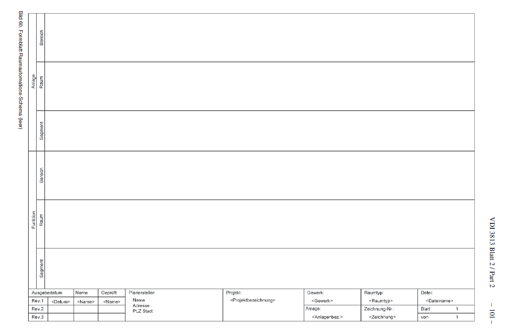
✔️ Lösung
💡 anzeigen
TODO
Ausführung
- Entscheidung für Hardware und Software, um die Funktionen umzusetzen
- Erstellung von Detailplänen und Dokumentationen
- Installation der Hardware und Verkabelung
- Implementierung von Software
- Funktionstests
Beispiel: Parametrisierung eines DALI-Systems
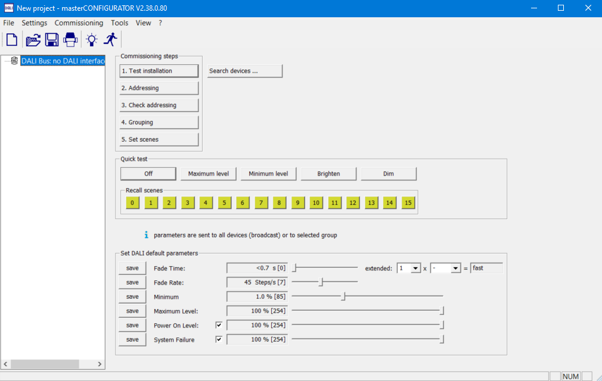
Beispiel: Programmierung eine SPS

Bussysteme
- i.d.R. gibt es eine Vielzahl von möglichen Bussystemen, die für die Umsetzung der Funktionen in Frage kommen
- häufig werden mehrere Bussysteme kombiniert und müssen orchestriert werden
- neben den Kosten müssen auch Anforderungen an Erweiterbarkeit und Wartbarkeit berücksichtigt werden
- Erweiterbarkeit:
- Wie einfach ist es, neue Komponenten hinzuzufügen?
- Wie offen ist das System für Veränderungen? Wartbarkeit:
- Sind Dienstleister oder Personal verfügbar, die das System warten können?
- Ist davon auszugehen, dass das System in 10 Jahren noch verfügbar ist?
Betriebsphase
- Softwareupdates:
- Wie können Softwareupdates eingespielt werden?
- Over-the-Air vs manuell?
- Wie werden die Updates getestet?
- Funktionstests:
- Wie kann die Funktionalität überprüft werden?
- Wie können Fehler identifiziert werden?
Automatisierungspyramide

Cloud
- Zunehmende Bedeutung von Cloud-Systemen
- Insbesondere die höheren Ebenen der Automatisierungspyramide werden zunehmend in die Cloud verlagert
Appendix: Ausgewählte Anwendungsfunktionen
Funktionen für die Raumklimaregelung II
-
Startoptimierung Wird dem Raumtemperaturregler über ein Zeitprogramm zusätzlich zum gegenwärtigen Energieniveau auch das nächste und der zugehörige Zeitpunkt mitgeteilt, ist der Regler in der Lage, den optimalen Aufheizzeitpunkt des Raums anhand zusätzlicher Informationen, wie der Raum- und der Außentemperatur, so zu bestimmen, dass die gewünschte Raumtemperatur genau zu dem gewählten Zeitpunkt zur Verfügung steht (Erweiterung der Energieniveauwahl).
-
Fensterüberwachung Bei geöffneten Fenstern sorgt die Fensterüberwachung für eine automatische Umschaltung auf das Energieniveau Gebäudeschutz um Energieverschwendung zu vermeiden. Der Zustand der Fenster wird über entsprechende Kontakte eingelesen.
Funktionen für die Raumklimaregelung III
-
Sollwertermittlung Abhängig vom Energieniveau muss ein Raumtemperaturregler in der Lage sein, die korrekte Sollwertvorgabe zu ermitteln. Zusätzlich kann der Sollwert bei hohen Außentemperaturen gleitend angehoben werden (Sommerkompensation), um zu große Unterschiede zur Raumtemperatur zu vermeiden.
-
Temperaturregelung Die eigentliche Regelung der Raumtemperatur durch Ermittlung der korrekten Stellantriebsstellung für Heizen oder Kühlen erfolgt durch die Funktion Temperaturregelung. In den meisten Fällen kommen PI-Regler zum Einsatz, die in der Lage sind, statische Regelabweichungen zu eliminieren.
Funktionen für die Raumklimaregelung IV
-
Ventilatorsteuerung Luftgestützte Anlagen, z. B. Gebläsekonvektoren, verfügen über Ventilatoren zum Lufttransport. Die Luftmenge kann dabei meist mehrstufig an die erforderliche Heiz- oder Kühlleistung angepasst werden. Die Wahl der geeigneten Ventilatorstufe erfolgt anhand der Differenz der Ist- zur Soll-Raumlufttemperatur oder analog zu den Stellantrieben der Heiz- oder Kühlregister.
-
Luftqualitätsregelung Wird die Versorgung der Räume mit Frischluft über mechanische Systeme, wie Zentral- oder Fassadenlüftungsanlagen gewährleistet, wird die Zuluftmenge zur Einsparung elektrischer Energie für die Ventilatoren an die Raumluftqualität angepasst.
Funktionen für die Raumklimaregelung IV
-
Nachtkühlung Kühle Nachtluft lässt sich zum Herunterkühlen der Raumluft nutzen, falls Fenster oder Fassadenklappen motorisch geöffnet werden können oder Gebläsekonvektoren mit Zuluftklappen vorhanden sind. Diese Funktion sollte mit Hilfe der gemessenen lokalen Raumtemperatur und der Außentemperatur raumindividuell ausgeführt werden, um eine optimale Absenkung zu erreichen.
-
Thermoautomatik Durch die Fenster eintretendes Sonnenlicht sorgt für einen Wärmeeintrag in den Raum, der je nach Raumtemperatur willkommen oder unwillkommen ist. Die Thermoautomatik übernimmt in unbelegten Räumen nun die Kontrolle über den Sonnenschutz zur Unterstützung von Heiz- oder Kühlvorgängen. So kann im Sommer eine Überhitzung vermieden und im Winter die Heizung durch solare Gewinne entlastet werden.
Funktionen für Beleuchtung, Blendschutz und Tageslichtnutzung
-
Konstantlichtregelung Ein Sensor zur Erfassung der Raumhelligkeit, z. B. innerhalb eines Multisensors, sorgt für die exakte Anpassung des Beleuchtungsniveaus an die Arbeitsaufgabe. Hierfür erforderlich sind dimmfähige Aktoren (analoger Ausgang).
-
Tageslichtschaltung Der "kleine Bruder" der Konstantlichtregelung ist überall dort einsetzbar, wo die Beleuchtung nur schaltbar ausgeführt werden kann. Zur Erfassung der Helligkeit ist ebenfalls ein Sensor im Raum erforderlich. Unterschreitet das Tageslicht die erforderliche Raumhelligkeit, wird Kunstlicht automatisch in ein oder mehreren Stufen zugeschaltet und bei Zunahme des Tageslichtanteils wieder abgeschaltet (digitaler Ausgang).
Funktionen für Beleuchtung etc. II
-
Automatiklicht In Räumen ohne ausreichende Tageslichtversorgung, z. B. in Fluren oder Sanitärräumen, lässt sich Energie sparen, indem die Beleuchtung nur temporär eingeschaltet wird. Die Präsenzerkennung liefert die hierfür erforderlichen Sensordaten. Eine einstellbare Abschaltverzögerung sorgt für Beleuchtungskomfort.
-
Sonnenautomatik Außenliegende Jalousien und bedingt auch Markisen sorgen vor allem für einen Wärmeschutz des Gebäudes. Innenliegende Jalousien, Vertikallamellen u. ä. sorgen vor allem für Blendfreiheit an Arbeitsplätzen. Die Sonnenautomatik sorgt nutzt Wetterdaten, damit der außenliegende Sonnenschutz eine einstellbare Position immer dann einnimmt, wenn eine bestimmte Strahlungsintensität überschritten wird. Der innen liegende Blendschutz ist i. d. R. nicht automatisiert, da das Blendungsempfinden individuell zu bewerten ist.
Funktionen für Beleuchtung etc. III
-
Lamellennachführung Die Lamellennachführung ist eine Weiterentwicklung der Sonnenautomatik. Bei hoher Strahlungsintensität fährt der Sonnenschutz dazu in eine Stellung, die zyklisch dem Sonnenstand angepasst wird. So wird unter Aufrechterhaltung des Blendschutzes die Tageslichtversorgung maximiert.
-
Verschattungskorrektur Umliegende Gebäude oder eigene Gebäudeteile sorgen auf den Fassaden für Schattenwurf, der die Blendschutzfunktion für die im Schatten liegenden Jalousien zeitweise unnötig macht. Die Jalousien sollten für eine bessere Tageslichtversorgung in dieser Zeit geöffnet sein. Die Verschattungskorrektur korrigiert dies in Verbindung mit der Sonnenautomatik oder der Lamellennachführung arbeitet. Die Funktion wird gelegentlich auch Jahresverschattungsdiagramm genannt.
Funktionen für Beleuchtung etc. IV
-
Dämmerungsschaltung Außenbeleuchtung ist nur dann erforderlich, wenn es dunkel wird. Da der Zeitpunkt jahreszeitlich variiert, sorgt die Dämmerungsschaltung selbstständig für den optimalen Einschaltmoment.
-
Witterungsschutz Witterungsschutzfunktionen vermeiden Schäden an der Sonnenschutzanlage. Sensoren für Temperatur, Niederschlag, Windgeschwindigkeit und -richtung stellen die erforderlichen Wetterdaten zur Verfügung, damit der Sonnenschutz rechtzeitig vor Beschädigungen eingezogen wird (ggf. auch für Fenster).